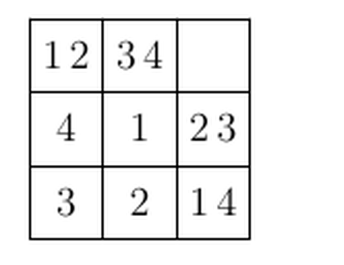
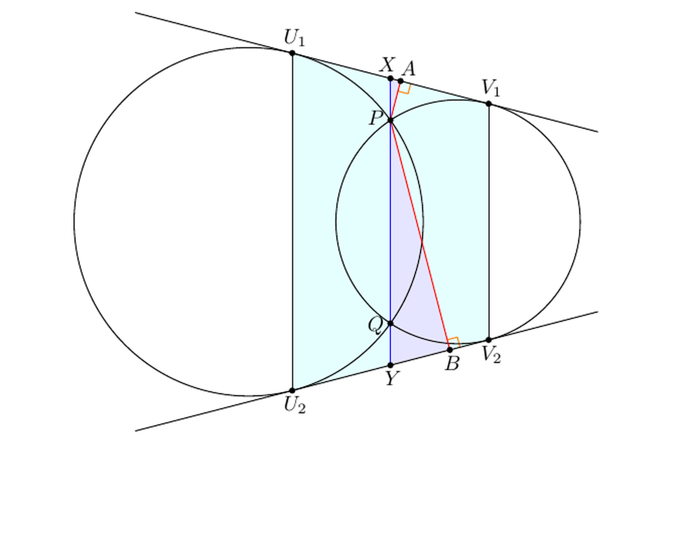

총평 / Notes
- Q9 — 정답은 \(abc=\tfrac{1}{91}\) 인데 유윤제는 그 역수 91을 적음 — \(\tfrac{11}{1001}\) 을 뒤집어 \(\tfrac{1001}{11}=91\) 로 계산한 실수.
the answer is \(\tfrac{1}{91}\) but Yunje wrote its reciprocal 91 — flipping \(\tfrac{11}{1001}\) into \(\tfrac{1001}{11}=91\).
- Q8 — 미응답. 방멱정리(Power of a Point) + 닮음으로 푸는 문제 — 아래 도형과 풀이 참고.
not attempted. Solve with Power of a Point + similar triangles (see the figure below).
Q1 ✓ Correct Geometry · similar triangles
Official\(3\)
Yunje\(3\)
Problem
Rectangle \(ABCD\); \(X\in BC,\ Y\in AD\) with \(\angle AXY=\angle XYC=90^\circ\) and \(AX:XY:YC=1:2:1\). Given \(AB=1\), compute \(BC\).
Solution
- Drop the foot \(Z\) from \(Y\) to \(BC\).
- \(\triangle ABX\sim\triangle XZY\) (right angle + shared angle).
- Since \(XY/AX=2\), \(XZ=2\,AB=2\) and \(BX=ZY/2=\tfrac12\).
- By symmetry \(CZ=\tfrac12\).
- \(\therefore BC=\tfrac12+2+\tfrac12=3.\)
Q2 ✓ Correct Combinatorics · parity
Official\(12\)
Yunje\(12\)
Problem
\(n\) integers are placed in a circle: at least one is \(0\); adjacent integers differ by exactly \(1\); the sum is \(24\). Find the smallest possible \(n\).
Solution
- Adjacent integers alternate in parity, so \(n\) is even.
- If \(n\le 8\), the sum \(\le 0+1+2+3+4+3+2+1=16<24\).
- If \(n=10\), there are five evens and five odds, so the sum is odd — cannot equal \(24\).
- \(\therefore n\ge 12\), and \(12\) is achievable.
Q3 ✓ Correct Combinatorics · counting
Official\(1296\)
Yunje\(1296\)
Problem
Fill each cell of a \(3\times3\) grid with some of \(1,2,3,4\) so that each row and each column contains each of \(1,2,3,4\) exactly once. Count the number of ways.

example grid given in the problem
Solution
- Count the placements of \(1,2,3,4\) separately.
- Each digit goes once per row in distinct columns: \(3!=6\) ways.
- The four digits are independent, so \(6^4=1296.\)
Q4 ✓ Correct Algebra · quadratics
Official\(31\)
Yunje\(31\)
Problem
Integers \(a,b,c\) with \(c\le 2025\) such that \(|x^2+ax+b|=c\) has exactly \(3\) distinct integer solutions. Find the number of possible values of \(c\).
Solution
- The condition \(\iff\) the two quadratics \(x^2+ax+b=c\) and \(=-c\) have 3 integer roots total.
- One has 2 roots, the other 1, so the vertex lies on \(y=-c\).
- Then \(x^2+ax+(b+c)=(x+\tfrac a2)^2\), so \(\tfrac a2\) is an integer.
- And \((x+\tfrac a2)^2=2c\), so \(2c=(2k)^2\Rightarrow c=2k^2\).
- \(1\le c\le 2025\Rightarrow 1\le k\le 31\): \(\boxed{31}\) values.
Q5 ✓ Correct Geometry · similar triangles
Official\(21\)
Yunje\(21\)
Problem
Points \(A,B,C,D\) lie on a line in that order. A point \(E\) satisfies \(\angle AED=120^\circ\) and \(\triangle BEC\) is equilateral. Given \(BC=10,\ AD=39\), compute \(|AB-CD|\).
Solution
- From the \(120^\circ\) angles, \(\triangle ABE\sim\triangle ECD\).
- With \(AB=x,\ CD=y\): \(\tfrac{x}{10}=\tfrac{10}{y}\Rightarrow xy=100\).
- \(x+y=AD-BC=29\).
- \((x-y)^2=29^2-4\cdot100=441\).
- \(\therefore |AB-CD|=\sqrt{441}=21.\)
Q6 ✓ Correct Combinatorics · lattice paths
Official\(81920\)
Yunje\(81920\)
Problem
A frog goes from \((0,0,0)\) to \((3,3,3)\); each move increases one coordinate by \(1\) or decreases \(z\) by \(1\). No point is visited twice and all coordinates stay in \([0,3]\). Count the distinct paths.
Solution
- Project the path to the \(xy\)-plane: \(\binom63=20\) up-right paths.
- Each of the 6 edges occurs at one of the heights \(z=0,1,2,3\): \(4^6\).
- These connect into a unique path via vertical moves.
- \(\therefore 4^6\binom63=81920.\)
Q7 ✓ Correct Number theory · divisors
Official\(1305\)
Yunje\(1305\)
Problem
A positive integer \(n\) is imbalanced if more than \(99\%\) of its positive divisors are less than \(1\%\) of \(n\). If \(M\) is an imbalanced multiple of \(2000\), find the minimum possible number of divisors of \(M\).
Solution
- \(M\) has \(\ge 13\) divisors that are \(\ge M/100\) (namely \(M/1,\dots,M/100\)).
- Since \(>99\%\) must be \(<M/100\), the total is \(\ge 13\cdot100+1=1301\).
- \(M=2^4\cdot5^{260}\) has \((4+1)(260+1)=1305\) divisors.
- \(32\nmid M\Rightarrow\nu_2(M)=4\), so the count is a multiple of \(5\), ruling out 1301–1304.
- \(\therefore\) minimum \(=1305.\)
Q8 — Blank Geometry · Power of a Point
Official\(200\)
Yunje미응답 (blank)
Problem
Circles \(\Gamma_1,\Gamma_2\) meet at \(P,Q\); their common external tangents \(\ell_1,\ell_2\) touch them at \(U_1,U_2,V_1,V_2\). Given \(PQ=10\) and distances from \(P\) to \(\ell_1,\ell_2\) equal \(3\) and \(12\), find the area of \(U_1U_2V_2V_1\).

Power of a Point figure
Solution
- Let \(PQ\) meet \(\ell_1,\ell_2\) at \(X,Y\); let \(A,B\) be the feet from \(P\).
- \(\triangle PXA\sim\triangle PYB\Rightarrow\tfrac{PY}{XP}-1=\tfrac{12}{3}-1=3\).
- So \(XP=\tfrac{10}{3},\ XQ=\tfrac{40}{3}\).
- Power of a Point: \(XU_1^2=XP\cdot XQ=XV_1^2\), so \(X,Y\) are midpoints and \(U_1V_1=\tfrac{40}{3}\).
- Midline \(XY=PQ+2\,PX=\tfrac{50}{3}\); height \(=\tfrac{9}{10}U_1V_1=12\).
- \(\therefore\) area \(=\) midline \(\times\) height \(=\tfrac{50}{3}\times12=200.\)
Q9 ✗ Wrong Algebra · polynomials
Official\(\dfrac{1}{91}\)
Yunje\(91\)
Problem
Distinct nonzero complex numbers \(a,b,c\) satisfy \((10a+b)(10a+c)=a+\tfrac1a\) and the two cyclic analogues. Compute \(abc\).
Solution
- Let \(f(x)=(x+a)(x+b)(x+c)\); then \(f(10a)=11(a^2+1)\), similarly for \(b,c\).
- So \(10a,10b,10c\) are the roots of \(f(x)-11\!\left(\tfrac{x^2}{100}+1\right)\).
- Compare constant terms: \(abc=-1000\,abc+11\Rightarrow 1001\,abc=11\).
- \(\therefore abc=\tfrac{11}{1001}=\tfrac{1}{91}.\)
- Error: Yunje wrote the reciprocal \(91\) — careful with \(\tfrac{11}{1001}\) vs \(\tfrac{1001}{11}\).
Q10 ✓ Correct Combinatorics · invariants
Official\(372\)
Yunje\(372\)
Problem
Jacob and Bojac each start in a cell of the same \(8\times8\) grid and hear the same directions. Jacob steps in the called direction; Bojac \(90^\circ\) counterclockwise of it; either stays put if the move leaves the grid. Find the maximum number of distinct ordered pairs (Jacob, Bojac).
Solution
- Replace Bojac by its \(90^\circ\) clockwise rotation Caboj, who moves in the called direction.
- Rotation is a bijection, so #(Jacob,Bojac) \(=\) #(Jacob,Caboj).
- Their bounding rectangle translates (both move) or shrinks (one blocked): taxicab distance is non-increasing.
- At distance \(d\), size \(x\times y\), there are \((9-x)(9-y)\) placements; sum over all \(d\).
- \(\therefore 2(1^2+\cdots+7^2)+(1+\cdots+7)+8^2=372.\)
Deep Dive — Problem 10 (Jacob & Bojac)
- Two people hear the same direction calls; Jacob moves in it, Bojac \(90^\circ\) counterclockwise, staying put if a move would leave the grid.
- Rotation trick: Caboj = the \(90^\circ\) clockwise rotation of Bojac moves in the called direction. Rotation is a bijection, so the count is preserved — two same-direction movers.
- Monovariant: the bounding rectangle translates (both move) or shrinks (one blocked) → the taxicab distance never increases.
- Counting: at distance \(d\), size \(x\times y\), there are \((9-x)(9-y)\) placements; summing gives \(2(1^2+\cdots+7^2)+(1+\cdots+7)+8^2=372\). General \(n\times n\): \(2(1^2+\cdots+(n-1)^2)+(1+\cdots+(n-1))+n^2\).
Practice 1. Tokens \(A,B\) on a row of cells \(1\)–\(5\). Each second the same direction (L/R) is called; each moves one cell, staying put if it would fall off. From \(A=1,B=5\), max number of ordered pairs \((A,B)\)?
Show solution
- Both move the same way, never pass each other; the gap \(B-A\) only decreases.
- Distances \(d=4,3,2,1,0\); at distance \(d\) there are \(5-d\) placements.
- \(\therefore (5{-}4)+(5{-}3)+(5{-}2)+(5{-}1)+(5{-}0)=1+2+3+4+5=\mathbf{15}.\)
Practice 2. On a \(3\times3\) grid Jacob moves in the called direction, Bojac \(90^\circ\) clockwise (staying put at edges). Max number of ordered pairs (Jacob,Bojac)?
Show solution
- Rotate Bojac \(90^\circ\) counterclockwise to Caboj → same-direction problem (bijection).
- For \(n=3\), sum \((4-x)(4-y)\) from \(3\times3\) down to \(1\times1\).
- \(1\cdot1+1\cdot2+2\cdot2+2\cdot3+3\cdot3=1+2+4+6+9=\mathbf{22}.\)
Q1 ✓ 정답 기하 · 닮음
공식 정답\(3\)
유윤제\(3\)
문제
직사각형 \(ABCD\)에서 \(X\in BC,\ Y\in AD\), \(\angle AXY=\angle XYC=90^\circ\), \(AX:XY:YC=1:2:1\). \(AB=1\)일 때 \(BC\)를 구하라.
풀이
- \(Y\)에서 \(BC\)에 내린 수선의 발을 \(Z\)라 둔다.
- \(\triangle ABX\sim\triangle XZY\) (직각 + 각 공유로 닮음).
- \(XY/AX=2\) 이므로 \(XZ=2\,AB=2\), \(BX=ZY/2=\tfrac12\).
- 대칭으로 \(CZ=\tfrac12\).
- \(\therefore BC=\tfrac12+2+\tfrac12=3.\)
Q2 ✓ 정답 조합 · 패리티
공식 정답\(12\)
유윤제\(12\)
문제
정수 \(n\)개를 원형으로 배치: 적어도 하나는 \(0\), 이웃한 두 수의 차는 정확히 \(1\), 합은 \(24\). 가능한 최소 \(n\)을 구하라.
풀이
- 이웃한 정수는 패리티가 교대하므로 \(n\)은 짝수.
- \(n\le 8\) 이면 합 \(\le 0+1+2+3+4+3+2+1=16<24\).
- \(n=10\) 이면 짝수 5개·홀수 5개 → 합이 홀수가 되어 \(24\) 불가.
- \(\therefore n\ge 12\), 그리고 \(12\)는 실제로 구성 가능.
Q3 ✓ 정답 조합 · 경우의 수
공식 정답\(1296\)
유윤제\(1296\)
문제
\(3\times3\) 격자의 각 칸에 \(1,2,3,4\) 중 일부를 넣어 각 행·열이 \(1,2,3,4\)를 정확히 한 번씩 포함하게 하는 경우의 수.
풀이
- 숫자 \(1,2,3,4\)의 배치를 각각 따로 센다.
- 각 숫자는 행마다 하나씩 서로 다른 열에 → \(3!=6\)가지.
- 네 숫자는 독립이므로 \(6^4=1296.\)
Q4 ✓ 정답 대수 · 이차식
공식 정답\(31\)
유윤제\(31\)
문제
정수 \(a,b,c\) (\(c\le 2025\))에서 \(|x^2+ax+b|=c\)가 서로 다른 정수해를 정확히 \(3\)개 가질 때, 가능한 \(c\)의 개수.
풀이
- 조건 \(\iff\) \(x^2+ax+b=c\)와 \(=-c\) 두 이차식의 정수해가 합쳐서 3개.
- 한 식은 근 2개, 다른 식은 1개 → 꼭짓점이 \(y=-c\) 위.
- \(x^2+ax+(b+c)=(x+\tfrac a2)^2\) → \(\tfrac a2\)는 정수.
- \((x+\tfrac a2)^2=2c\) → \(2c=(2k)^2\Rightarrow c=2k^2\).
- \(1\le c\le 2025\Rightarrow 1\le k\le 31\): 가능한 \(c\)는 \(31\)개.
Q5 ✓ 정답 기하 · 닮음
공식 정답\(21\)
유윤제\(21\)
문제
직선 위에 순서대로 \(A,B,C,D\). 점 \(E\)가 \(\angle AED=120^\circ\)이고 \(\triangle BEC\)는 정삼각형. \(BC=10,\ AD=39\)일 때 \(|AB-CD|\)를 구하라.
풀이
- \(120^\circ\) 각에서 \(\triangle ABE\sim\triangle ECD\).
- \(AB=x,\ CD=y\)면 \(\tfrac{x}{10}=\tfrac{10}{y}\Rightarrow xy=100\).
- \(x+y=AD-BC=29\).
- \((x-y)^2=29^2-4\cdot100=441\).
- \(\therefore |AB-CD|=\sqrt{441}=21.\)
Q6 ✓ 정답 조합 · 격자경로
공식 정답\(81920\)
유윤제\(81920\)
문제
개구리가 \((0,0,0)\)에서 \((3,3,3)\)로. 한 번에 한 좌표를 \(+1\) 하거나 \(z\)를 \(-1\). 같은 점 재방문 금지, 모든 좌표는 \([0,3]\). 경로의 수를 구하라.
풀이
- 경로를 \(xy\)평면에 사영: \((0,0)\to(3,3)\) up-right 경로 \(\binom63=20\)가지.
- 6개 변 각각이 높이 \(z=0,1,2,3\) 중 하나에서 일어남: \(4^6\).
- 수직 이동으로 유일한 경로로 연결됨.
- \(\therefore 4^6\binom63=81920.\)
Q7 ✓ 정답 정수론 · 약수
공식 정답\(1305\)
유윤제\(1305\)
문제
양의 정수 \(n\)이 imbalanced란 양의 약수의 \(99\%\) 초과가 \(n\)의 \(1\%\) 미만임을 뜻한다. \(M\)이 \(2000\)의 배수이면서 imbalanced일 때 약수 개수의 최솟값을 구하라.
풀이
- \(M\)은 \(M/1,\dots,M/100\) 중 13개 약수가 \(M/100\) 이상.
- \(>99\%\)가 \(M/100\) 미만이어야 하므로 전체 약수 \(\ge 13\cdot100+1=1301\).
- \(M=2^4\cdot5^{260}\) → 약수 \((4+1)(260+1)=1305\)개.
- \(32\nmid M\Rightarrow\nu_2(M)=4\) → 약수 수가 \(5\)의 배수 → 1301~1304 불가.
- \(\therefore\) 최소 \(1305.\)
Q8 — 미응답 기하 · 방멱정리
공식 정답\(200\)
유윤제미응답 (blank)
문제
두 원 \(\Gamma_1,\Gamma_2\)가 \(P,Q\)에서 만남. 공통외접선 \(\ell_1,\ell_2\)의 접점이 \(U_1,U_2,V_1,V_2\). \(PQ=10\), \(P\)에서 \(\ell_1,\ell_2\)까지 거리 \(3,12\)일 때 사각형 \(U_1U_2V_2V_1\)의 넓이를 구하라.
방멱정리 도형 — 접점 \(U_1,U_2,V_1,V_2\), 교점 \(P,Q\)
풀이
- \(PQ\)가 \(\ell_1,\ell_2\)와 만나는 점을 \(X,Y\), \(P\)의 수선의 발을 \(A,B\)라 둔다.
- \(\triangle PXA\sim\triangle PYB\Rightarrow\tfrac{PY}{XP}-1=\tfrac{12}{3}-1=3\).
- 따라서 \(XP=\tfrac{10}{3},\ XQ=\tfrac{40}{3}\).
- 방멱정리 \(XU_1^2=XP\cdot XQ=XV_1^2\) → \(X,Y\)는 중점, \(U_1V_1=\tfrac{40}{3}\).
- 중선 \(XY=PQ+2\,PX=\tfrac{50}{3}\); 높이 \(=\tfrac{9}{10}U_1V_1=12\).
- \(\therefore\) 넓이 \(=\) 중선 \(\times\) 높이 \(=\tfrac{50}{3}\times12=200.\)
Q9 ✗ 오답 대수 · 다항식
공식 정답\(\dfrac{1}{91}\)
유윤제\(91\)
문제
서로 다른 \(0\) 아닌 복소수 \(a,b,c\)가 \((10a+b)(10a+c)=a+\tfrac1a\) 와 순환식 두 개를 만족. \(abc\)를 구하라.
풀이
- \(f(x)=(x+a)(x+b)(x+c)\)로 두면 \(f(10a)=11(a^2+1)\), \(b,c\)도 동일.
- 따라서 \(10a,10b,10c\)는 \(f(x)-11\!\left(\tfrac{x^2}{100}+1\right)\)의 세 근.
- 상수항 비교: \(abc=-1000\,abc+11\Rightarrow 1001\,abc=11\).
- \(\therefore abc=\tfrac{11}{1001}=\tfrac{1}{91}.\)
- 오답: 유윤제는 역수 \(91\)을 적음 — \(\tfrac{11}{1001}\)과 \(\tfrac{1001}{11}\)을 혼동.
Q10 ✓ 정답 조합 · 불변량
공식 정답\(372\)
유윤제\(372\)
문제
Jacob과 Bojac이 같은 \(8\times8\) 격자에서 출발해 같은 방향 지시를 듣는다. Jacob은 그 방향으로, Bojac은 반시계 \(90^\circ\) 방향으로 한 칸; 격자를 벗어나면 멈춤. 도달 가능한 순서쌍 (Jacob, Bojac)의 최대 개수를 구하라.
풀이
- Bojac을 중심에 대해 시계 \(90^\circ\) 회전한 Caboj 도입 → 호출 방향대로 이동.
- 회전은 전단사 → (Jacob,Bojac) 수 \(=\) (Jacob,Caboj) 수.
- 두 점의 직사각형: 둘 다 이동=평행이동, 한 명 멈춤=축소 → 택시거리 비증가.
- 거리 \(d\)·크기 \(x\times y\)에서 위치 \((9-x)(9-y)\), 모든 \(d\) 합산.
- \(\therefore 2(1^2+\cdots+7^2)+(1+\cdots+7)+8^2=372.\)
심화 — 10번 Jacob & Bojac 개념 해설
- 두 사람이 같은 방향 지시를 듣지만 Jacob은 그 방향대로, Bojac은 반시계 \(90^\circ\) 방향으로 움직이고 격자를 벗어나면 멈춘다.
- 회전 트릭: Bojac을 중심에 대해 시계 \(90^\circ\) 회전한 Caboj는 지시 방향대로 움직인다. 회전은 전단사이므로 순서쌍 개수가 보존되어 '두 사람이 같은 방향으로 움직이는' 문제로 바뀐다.
- 단조감소량: 두 점을 대각으로 하는 직사각형은 둘 다 이동하면 평행이동, 한 명만 벽에 막히면 축소된다 → 택시거리는 절대 증가하지 않는다.
- 개수: 거리 \(d\)·크기 \(x\times y\)에서 \((9-x)(9-y)\)가지, 모두 더하면 \(2(1^2+\cdots+7^2)+(1+\cdots+7)+8^2=372\). 일반 \(n\times n\): \(2(1^2+\cdots+(n-1)^2)+(1+\cdots+(n-1))+n^2\).
연습문제 1. 1~5번 칸 일렬 위 토큰 \(A,B\). 매 초 같은 방향(좌/우)으로 한 칸씩 이동(밖이면 멈춤). \(A=1,B=5\) 출발 시, 만들 수 있는 순서쌍 \((A,B)\)의 최대 개수는?
해설 보기
- 둘 다 같은 방향이라 서로 추월 불가, 간격 \(B-A\)는 줄기만 한다.
- 거리 \(d=4,3,2,1,0\); 거리 \(d\)에서 \((a,a+d)\)를 놓을 자리는 \(5-d\)가지.
- \(\therefore (5{-}4)+(5{-}3)+(5{-}2)+(5{-}1)+(5{-}0)=1+2+3+4+5=\mathbf{15}.\)
연습문제 2. \(3\times3\) 격자에서 Jacob은 호출 방향대로, Bojac은 시계 \(90^\circ\) 방향으로 이동(밖이면 멈춤). 순서쌍 (Jacob,Bojac)의 최대 개수는?
해설 보기
- Bojac을 반시계 \(90^\circ\) 회전한 Caboj 도입 → 같은 방향 문제로 환원(전단사).
- \(n=3\)에서 \((4-x)(4-y)\)를 \(3\times3\)부터 \(1\times1\)까지 합산.
- \(1\cdot1+1\cdot2+2\cdot2+2\cdot3+3\cdot3=1+2+4+6+9=\mathbf{22}.\)